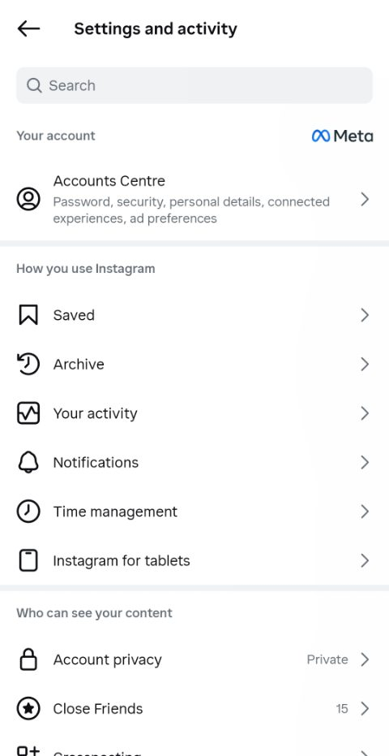
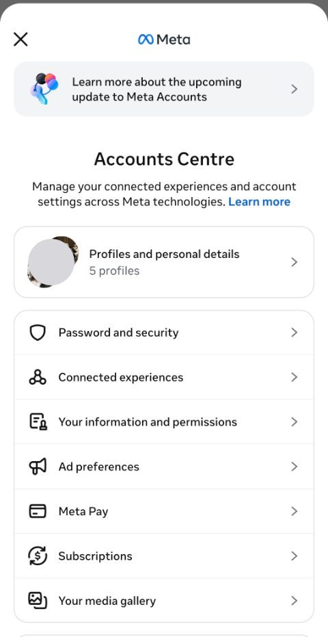
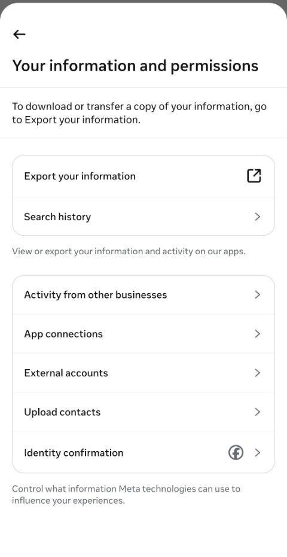
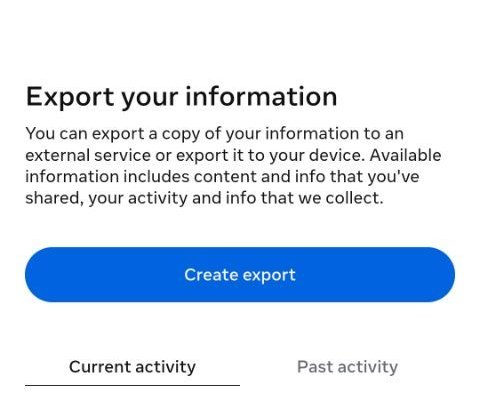
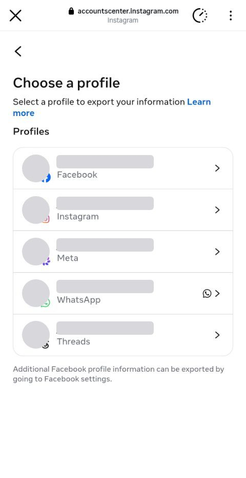
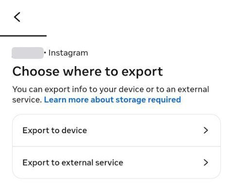
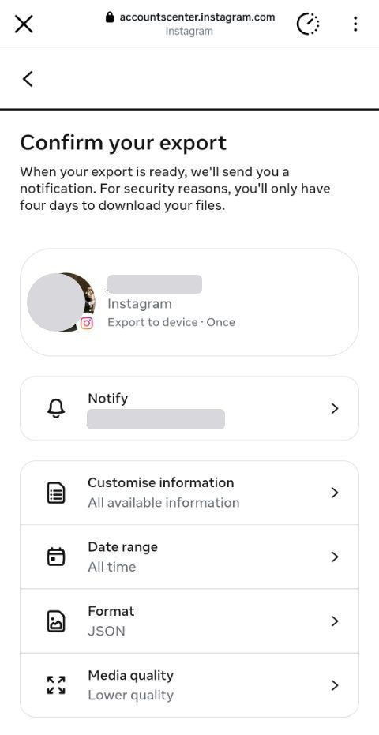

How to download your Instagram data
Instagram will export everything you have done on it: posts, comments, likes, follows, saved posts and messages. Requesting it takes about 30 seconds. Instagram then emails you when the file is ready, usually within a few hours.
Open Download your information See what PsycheAI makes of it
Step by step, on the Instagram app
-
1Open Download your information
The link above brings you to step 2. If it does not open, open your Instagram app and follow the below steps.
Settings → tap Accounts Centre 
Tap Your information and permissions 
Tap Export your information 
-
2Create export, then pick your Instagram profile
Tap Create export 
Tap Instagram 
Choose Export to device 
-
3Change three settings, then start the export
- Date range → All time — the whole history, not a recent slice
- Format → JSON — not HTML. An HTML export cannot be read at all, and you only find out hours later
- Media quality → Lower quality — your photos are never read, so full resolution is gigabytes for nothing
Then tap Start export. Password is required.

-
4Wait for the email, then upload the file
Instagram emails you when the export is ready. Download the
.zipfrom the email to the device you will use, then load it into PsycheAI. Do not unzip it first.
The three settings that matter
- Format: JSON, not HTML. HTML is for reading in a browser; JSON is what tools such as PsycheAI can read. It is the one setting worth checking twice, because you only find out hours later.
- Date range: All time. A recent slice leaves out the years that show who you are rather than what you did this month.
- Media quality: Lower quality. Full-resolution photos and videos make the file gigabytes larger and slower to arrive. PsycheAI does not need them.
Questions
How long does the Instagram data download take?
Usually from a few minutes to a few hours, depending on how much you have posted and saved. Instagram emails you when it is ready, and the download stays available for a few days after that.
Can I do it on a computer?
Yes. Open accountscenter.instagram.com, sign in, and follow the same steps from Export your information.
I chose HTML by mistake. What now?
Request a new export with Format set to JSON. An HTML export cannot be turned into a JSON one.
What does PsycheAI do with the file?
It reads the export in your browser and builds a reduced summary of it, which you can review before anything is sent. Only that summary goes to the AI model that writes your Psyche Card. There is no account, and the export, the summary and the report are never stored by PsycheAI.
Got the file? Your first Psyche Card is free
No questionnaire, no account. About a minute once your export is ready.